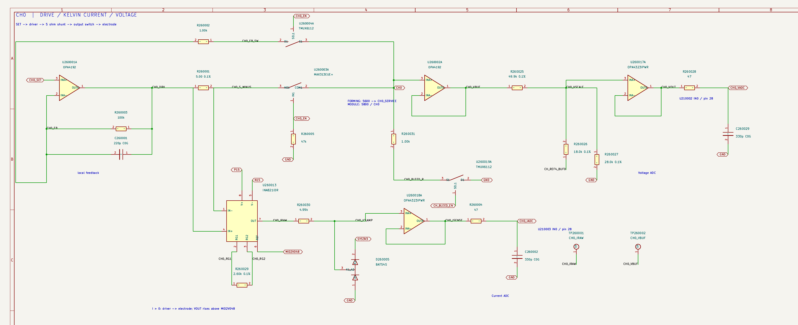

Оба фрагмента получены из PDF KiCad с разрешением 300 dpi, ширина каждого кадра — 85 мм. Электрические связи и физические номера выводов сохранены. Нажмите на изображение, чтобы открыть его в полном разрешении.
Лист 2600 до переработки; кадр охватывает разнесённые шунт, INA821 и RG.
От каждого конца шунта идёт свой провод. IN+ — вывод 4, IN− — вывод 1; RG R260029 соединён с выводами 2 и 3.
Задание, местная и удалённая обратная связь, электрод, измерение напряжения, измерение тока и два выходных RC-фильтра. Кадр — из той же страницы PDF, 220 dpi.

Полный Control PDF — страница 2600 (26-я в PDF) · Отчёт и перечень страниц